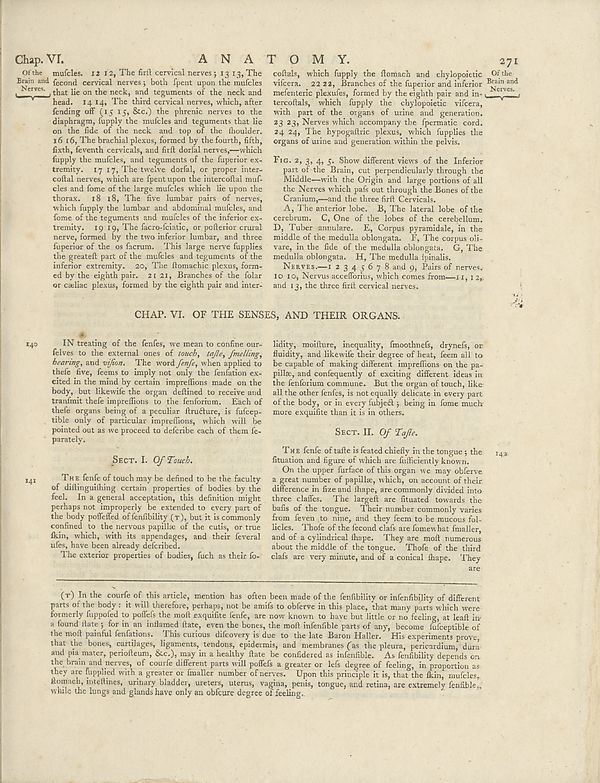

Source · scan and Parse blocks
Layers 5

Parse text by block reading order
- 0Page-headerChap. VI.
- 1TitleA N A T O M Y.
- 2Page-header271
- 3TextOf the muticles 12 12, The first cervical nerves; 13 13, The Brain and femoral cervical nerves both front upon in muticles that lie on the neck, and teguration of the neck and head. 14 14. The third cervical nerves, which after feeding off (12 15, Scc) the placenta nerve to the diaphragm, supply the mufles and tegurements that lie on the fide of the neck and top of the shoulder. 16 16, The brachial plexus, formed by the fourth, fifth, forth, towards cervical, and frit dorial nerves--which lupply the mufles, and tegurement of the effective extremity. 17 17, The twelve dorial, or proper intercedul nerves, which is peut upon the intercedul muscles and tone of the large mufles which are upon the thorax. 18 18, The five lumbar part of the nerves, which puppy the lumbar and abdominal muscles, and forms of the tegurism and mufles of the inferior extremity. 10 17, The fourscoles, as preferred cranial nerve, formed by the two inferior lumber, and three superior of the os Herman. This large nerve fulpthe the general part of the medicale and teguements of the inferior extremity. 20. The thoracic plexus, formed by the eighth pair. 21 21, Branches of the follor or callic plexus, formed by the eighth pair and inter-
- 4Textcollals, which lupply the flomach and chylopotic vience. 22 19. Branch of the figure and anterior mesenteric plexus, formed by the eighth pair and fifth tercedula, which lupply the chyopotic vience. With part of the organs of urine and generation. 23 23, Nerve which accompany the fermatic cord. 24 24, The hypogotic plexus, while fusplies the organs of urine and generates within the pelvis.
- 5TextFig. 2, 3, 4. Show different views of the Inferior part of the Brain, cut perpendicularly through the Middle-with, the Origin and large portions of all the Nerve which puts through the Bones of the Cranium,—and the three full Cervicals.
- 6TextThe anterior lobe, B, The lateral lobe of the cerebellum. C, One of the lobes of the cerebellum. To Tube aunture, K, Corpus pyramidal, in the middle of the medulla oblongata. G, The corpus olivare, in the fide of the medulla oblongata. G, The medulla oblongata. H, Hamilton mediala insula.
- 7TextNaxxta - 2, 3,4, 6 5 and 3 Plate of nerves. 10 16, Nervus accoltionis, which comes from--11, 12, and 13, the three first cervical nerves.
- 8Section-headerCHAP. VI. OF THE SENSES, AND THEIR ORGANS.
- 9Text140 IN treating of the feeling, we mean to confine ourselves to the external ones of touch, triple, fineing, hearing, and vision. The word [only], when applied to their lives, fears us imply not only the forlation occurred in the limited by certain impurities made on the body, but likewise the organ defined to receive and transmit basic ingredients in the forbidden. Each of these organs being at a peculiar threat, is if dependible only of particular impretions, which will be pointed out as we proceed to define each of them fe parately.
- 10Section-headerSect. I. _Of Touch._
- 11Text141 In this feature of touch may be defined to be the faculty of diltinguling certain properties of bodies by the feel. In a general accepted, this definition might perhaps not properly be extended to every part of the body political of identifying (又), it is commonly combined to the nervous pupils, and consequently of exciting differences in the fenision communes. But the origin of touch, like all the other feels, it not equally distinct in every part of the body, or in every subjects, being in force much more equitable than it to others.
- 12Section-headerSect. II. _Of Teife._
- 13TextThis feeds of safe is faced chiefly in the tongue, the fixation and figure of which are sufficiently known.
- 14TextOn the upper further of this organ was may observe a great number of pupils, which, on occasion of their difference in free and hays, are commonly divided into three clades. The largest are trusted towards the final of the tongue. Their main community varies from fever to nine, and they form to be mucous folicles. Thief of the second clats and tunnels that matter, and of a cylindrical shape. They are most humorous about the middle of the tongue. Those of the third clats are very minute, and of a conical shape. They are
- 15Footnote(v) In the course of this article, mention has often been made of the feasibility or interfilability of different parts of the body: it will therefore, perhaps, not be amido to oblive in this place, that many parts which were formerly tipped to polls the molt exquiteite fenle, are now known to have but little or no feeling, as leaf in a found story, for its inflamed there, even the bones, the molt infertible part of any, become susceptible of the molt painful fentiations. This curious discovery is due to the late late Haller. His experiment prove, that the females, cartilage, ligaments, tendons, epadenies, and membranes (as the plantar, periardium, diam and just master, peripheral, Sec) may in a healthy thus he considered in infinities. As fertilising depends on the brain and nerves, of courie different parts will polls a greater or lefs degree of feeling, in proportion as they are fluppled with a greater or insufficient number of nerves. Upon this principle it is, that the film, mulcles, domonic, interfere, urinary bladder, ureters, vagues, pens, tongue, and setina, are extremely feasible, while the lungs and glands have only an obscure degree of feeling.
Provenance page_id, checksum, Parse model
- page_id
- britannica:309f765b1ecc83e0a7f7762e44b4a927a7555443:train:2277
- sha256
- cdde2fc730b9b43e147b41385c61a207df3d0519a0ec368e9bbc3b3ecd4432de
- Parse
- nvidia/nemotron-3.5-parse · finish stop